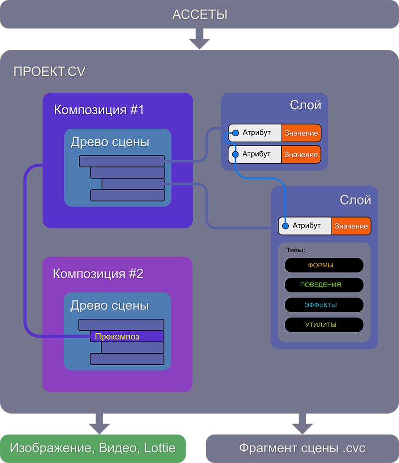

Общая схема работы
Как работает Cavalry
Общий принцип работы программы следующий:
- При создании проекта автоматически создаётся специальный контейнер называемый композицией.
- Затем в проект импортируются внешние файлы в качестве ассетов, то есть ресурсов.
- Внутри композиции на основе типа создаются слои, которые иерархически размещаются в древе сцены.
- Каждый слой имеет встроенные атрибуты со своими значениями, которые могут соединяться между собой и управлять друг другом.
- Любую композицию можно преобразовать в специальный ассет, который называется прекомпоз и затем встроить его в другие композиции как обычный слой.
- Из проекта можно выводить различные файлы:
- статичные изображения, видео и файлы формата Lottie.
- фрагменты сцен.

В проекте всегда должна присутствовать хоть одна композиция!
Если вы удаляете несколько композиций, то самую последнюю удалить не получится.